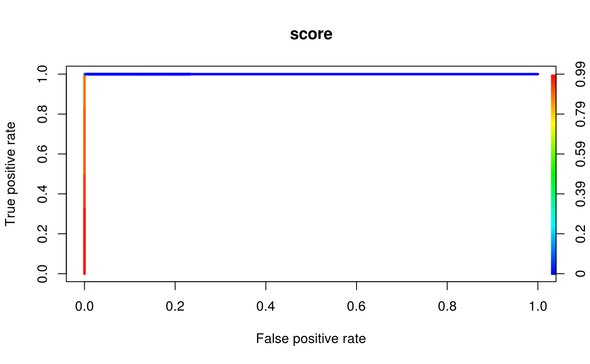
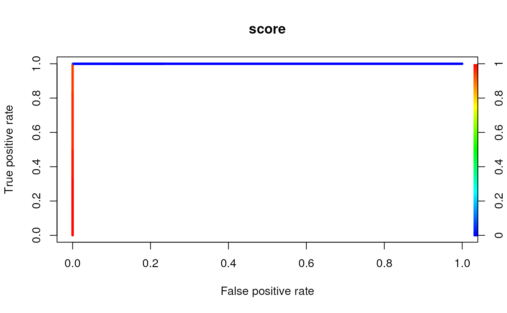

Modifier and ModifierSet objectsR/AllGenerics.R, R/Modifier-roc.R
plotROC.RdplotROC streamlines labeling, prediction, performance and plotting
functions to test the peformance of a Modifier object and the data
analyzed via the functionallity from the ROCR package.
The data from x will be labeled as positive using the coord
arguments. The other arguments will be passed on to the specific ROCR
functions.
By default the prediction.args include three values:
measure = "tpr"
x.measure = "fpr"
score = mainScore(x)
The remaining arguments are not predefined.
plotROC(x, coord, ...) # S4 method for Modifier plotROC( x, coord, score = NULL, prediction.args = list(), performance.args = list(), plot.args = list() ) # S4 method for ModifierSet plotROC( x, coord, score = NULL, prediction.args = list(), performance.args = list(), plot.args = list() )
| x | a |
|---|---|
| coord | coordinates of position to label as positive. Either a
|
| ... | additional arguments |
| score | the score identifier to subset to, if multiple scores are available. |
| prediction.args | arguments which will be used for calling
|
| performance.args | arguments which will be used for calling
|
| plot.args | arguments which will be used for calling |
a plot send to the active graphic device
Tobias Sing, Oliver Sander, Niko Beerenwinkel, Thomas Lengauer (2005): "ROCR: visualizing classifier performance in R." Bioinformatics 21(20):3940-3941 DOI: 10.1093/bioinformatics/bti623
data(msi,package="RNAmodR") # constructing a GRanges obejct to mark positive positions mod <- modifications(msi) coord <- unique(unlist(mod)) coord$score <- NULL coord$sd <- NULL # plotting a TPR vs. FPR plot per ModInosine object plotROC(msi[[1]],coord)# plotting a TPR vs. FPR plot per ModSetInosine object plotROC(msi,coord)